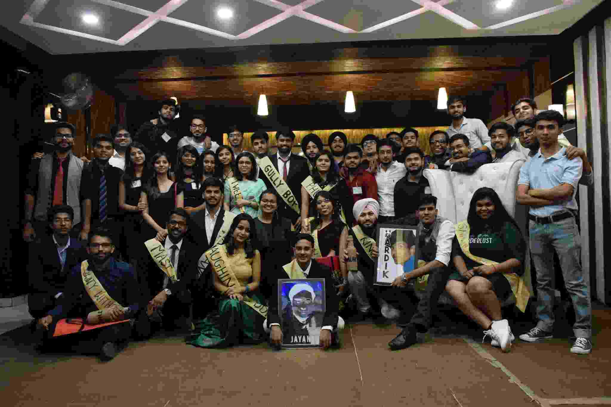
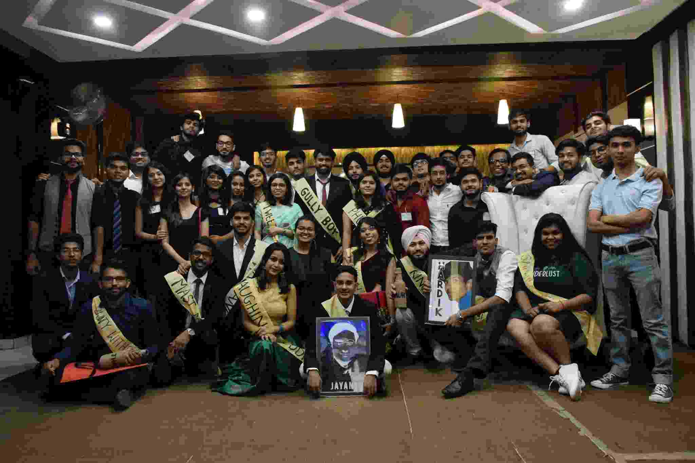
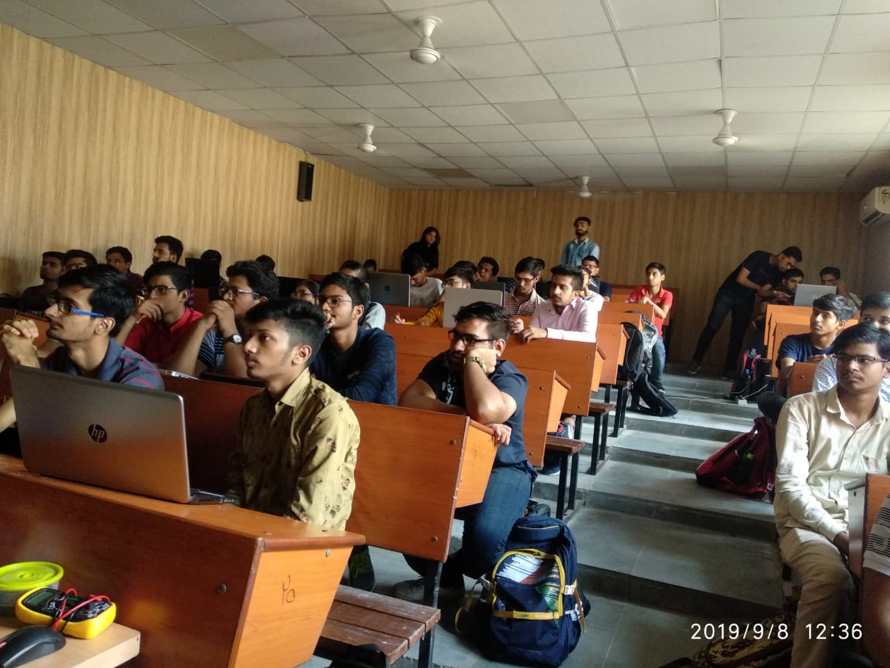
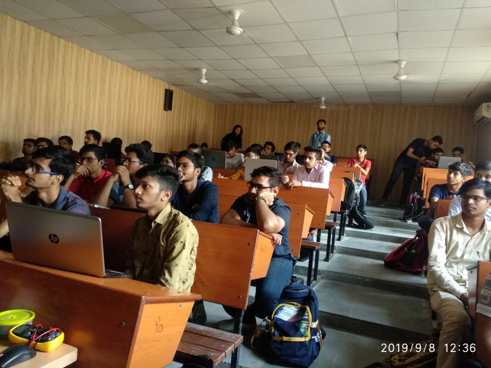

Srijan
Charcoal workshop
18 August
A workshop on Charcoal painting
Srijan
Logo Making Competition
18 November
An abstract art workshop
Jahalk
Safdarjung photo walk
5 October
A photoshoot to Fort Safdarjung was organized
Jahalk
Photoshop Workshop
19 August
A Photoshop workshop was organized
Vivdha
Nukkad
19 February
A Nukkad on drugs.
Vivdha
Shaheed Bhagat Singh Act
24 January
An Act in honour of Shaheed Bhagat Singh
Ananya
Kaavyotsav
3 March
The members of Ananya performed poetry.
Ananya
NTPC Debate
@
Organised declamation and essay competition in collaboration with IOCL
Natraj
DANCE-MA-TAZZ
2 February
Dance item from Natraj
Natraj
Reizo’19
16 September
Group dance at fresher and foundation
Manan
Bootcamp
9 August
Programming Boot Camp with Coding Ninja
Manan
CodeXplod
25 March
A Prefest event
Microbird
Reizo’17
16 September
Microbird presented Iridescent aka Light show
Microbird
Basics of Electronics Workshop
7 September
A workshop on basic electronic components
Sae
Quiz competition
27 March
A quiz competition for awareness
Sae
Auto Show
27 March
ATV car & F1 car
Samarpan
Visit to national science center museum
10 February
A visit to national science center museum
Samarpan
Proteus
5 November
A workshop on Proteus was organized.
Mechnext
Danfoss: Centre of Excellence
20 January
Organized inauguration ceremony
Mechnext
Robotics workshop
8 February
A workshop on robotics and RC panel.
IEEE
Big Boss
24-26 March
Organised a technical cum fun event
IEEE
Twist Tambola
26 March
wist in this game was a Power Point
Eklavya
Vivriti
-
Sports events
Eklavya
Endeavour
-
Sports events
Vivekanand Manch
Visit to Old Age Home
4 August
Members of the Manch visited the “Janak Sewa Samiti Old Age Home” in sector-19, Faridabad
Vivekanand Manch
Arise Awake Achieve 3.0 workshop
29 March
The workshop was organized for the personality development which was totally interactive and involving. The workshop commenced with some games those helped students open a bit.
NSS
Nutrition Camp in Village
17 September
The NSS Team organised an awareness camp in villages RAJPUR, KANWRA and PHALODI
NSS
NSS Orientation day
3 February
General orientation Day on NSS was conducted for the students
Taranum
Musical Workshop
7-13 June
The classical music workshop was organized by Sanskar Bharti
Taranum
Independence Day
15 August
Tarannum, the music society of YMCAUST performed group song on the Independence day of the nation
Nirmayam
Sandhan
3 April
This event was held on the first day of the fest in which many formations of yoga was made by the yoga club members.
Nirmayam
Sandhan
4 April
This event was held on the 2nd day of the fest .Challenge me is an enthusiastic event to show your flexibility, strength and balance.


 



 
